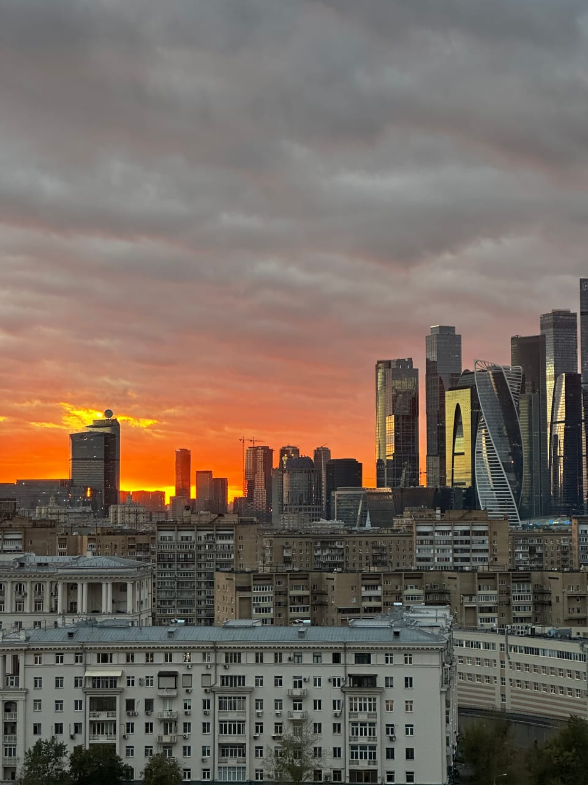

Golden hour
Закаты на крышах Москвы
Вечерняя прогулка по крыше с сопровождающим под самый закат: 1 час, от 2000 ₽ с человека, продление — 500 ₽ с человека за час. Выбирайте слот ближе к закату, если он есть в расписании, — и золотой час ваш.
Почему стоит идти на закате
Закат меняет город: крыши становятся спокойнее, свет теплее, а фотографии выглядят дороже без сложной постановки. Это хороший формат для пары, туристов, друзей и короткой съемки.
С улицы солнце обычно прячется за домами, и видно только отсвет на небе. С крыши горизонт открыт шире: можно застать сам момент, когда солнце опускается к линии города, небо переходит от золотого к синему, а внизу зажигаются огни улиц и подсветка зданий. Чем закат на высоте отличается от набережных и смотровых площадок, подробно рассказали в статье «Где смотреть закат в Москве».
Закат на крыше: какие площадки выбрать
Вечерний свет красив почти на любой крыше каталога, но есть точки, которые особенно хороши на закате и сразу после него. Вот четыре, которые мы советуем для вечерней прогулки. Формат на всех одинаковый: подъём с сопровождающим и 1 час наверху. Цена зависит от крыши — актуальную показывает Telegram-бот, а точное место встречи сообщаем после подтверждения записи.
Марксистская — главный закатный ракурс каталога. Сталинская высотка на Котельнической стоит здесь прямо по центру кадра, и в ясный вечер её шпиль превращается в тёмный силуэт на оранжевом небе. Днём отсюда получается обычный городской вид, так что приходить стоит именно к закату. Точка камерная, долго ходить по кровле не нужно, поэтому она хорошо подходит для свидания и сильных вертикальных кадров.
Смоленская — крыша, где солнце садится за башни Москва-Сити. Внизу течёт Москва-река с мостами: хорошо видны Бородинский мост и Киевский вокзал за ним, а на том берегу стоит гостиница «Украина». Высотка МИД неподалёку ловит последний свет, а после заката зажигается подсветка мостов и набережной, и в реке появляются отражения. В одну прогулку здесь помещаются сразу несколько символов Москвы.
Фили 60 этажей — самая высокая точка каталога. Москва-Сити отсюда видно сверху, а не снизу вверх, как с улицы, и город внизу выглядит как карта. Сразу после захода солнца небо ещё синее, а огни уже горят — лучшее сочетание для кадров с такой высоты.
Шелепиха 9 этажей — наоборот, невысокая крыша, зато башни Сити стоят совсем рядом и заполняют кадр целиком. Обзорной панорамы города здесь нет, вся картинка — про небоскрёбы, и раскрывается она в сумерках, когда в башнях загорается подсветка. Хороший вариант для тех, кто побаивается высоты.
Когда приходить
Если в расписании есть слот ближе к закату, берите его: так вы застанете золотой час с мягким тёплым светом, сам закат и первые огни города. Время заката заметно сдвигается в течение года, поэтому точное время прогулки согласуем в Telegram при записи. Напишите, для чего прогулка — свидание, съёмка или просто посмотреть на город, — и подскажем подходящий слот. Погоду гарантировать нельзя: если она мешает прогулке, заранее свяжемся и предложим перенос.
Базовая прогулка длится 1 час. Если хочется застать и закат, и вечерний город после него, прогулку можно продлить ещё на час — 500 ₽ с человека, если площадка свободна. Что меняется в кадре после захода солнца, рассказали в статье «Вечерняя Москва с крыши».
Для свидания и съёмки
Закатный слот — классика для свидания: вечерний свет и город внизу превращают обычную прогулку в маленькое событие, а сюрприз для второй половинки можно заранее согласовать в Telegram. Подробнее о формате — на странице «Свидание на крыше».
Для съёмки золотой час удобен тем, что мягкий низкий свет красиво ложится на лица и не требует сложной техники: телефона обычно хватает. Снимать можно самим или прийти со своим фотографом. Чем ниже солнце, тем выразительнее силуэты на фоне неба, поэтому самые эффектные кадры часто получаются в последние минуты перед заходом. Идеи для кадров — на странице «Фотосессия на крыше».
Что учесть
- закат зависит от погоды и сезона;
- при облачности прогулка все равно может быть атмосферной;
- лучше приходить вовремя, чтобы не потерять красивый свет;
- вечером на высоте прохладнее, чем на улице, — возьмите тёплый слой и удобную нескользящую обувь;
- для больших компаний детали согласуются заранее.
Отзывы
Реальные впечатления и живые кадры можно смотреть в Instagram @moscowrooftop.ru.
FAQ
Про закаты
Гарантирован ли красивый закат?
Нет, погода всегда влияет на свет. Но даже облачный вечер на крыше может быть очень атмосферным.
Можно ли прийти на свидание?
Да, вечерний формат особенно хорошо подходит для свиданий.
Можно продлить прогулку?
При возможности да: 500 руб. за человека за дополнительный час.
Закатный слот